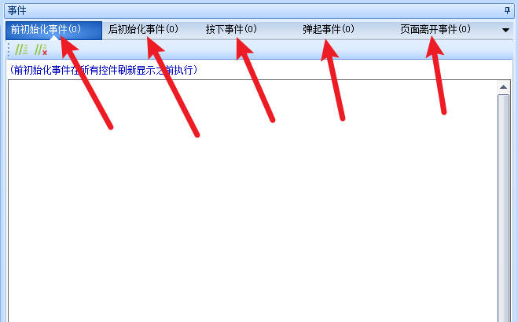
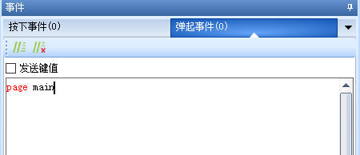
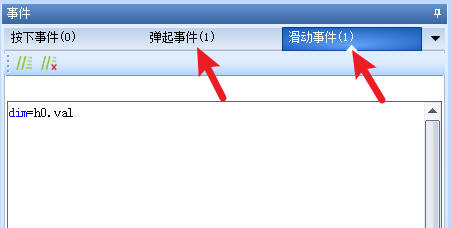
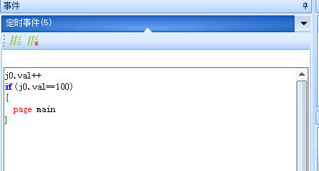

控件事件
目前各种控件综合起来被操作的方式有以下种类型：
页面控件事件
页面控件是一个特殊的控件，新建了一个页面后，会自动创建一个同名的页面控件，页面控件必定与页面名称相同，且页面控件的ID必定为0，即页面控件始终处于最底层
页面前初始化事件是在页面加载前自动执行的
页面后初始化事件是在页面完成后自动执行的
页面离开事件是在执行了跳转页面动作时执行的
点击页面的空白处,即可触发页面控件的按下或弹起事件

按下和弹起事件
触摸被按下：对应名称叫做【按下事件】
触摸被按下后弹起：对应名称叫做【弹起事件】
例如实现点击按钮跳转页面功能时，将page指令（跳转页面）写在按钮的弹起事件中，当手指点击对应的控件并放开时，此时就会触发跳转

滑动事件
滑块控件被滑动：对应的名称叫做【滑动事件】
例如在滑块的滑动事件和弹起事件中修改串口屏的亮度（全局变量dim）

定时事件
定时器定时运行：对应的名称叫做【定时事件】
例如显示开机进度，当进度为100时跳转到main页面

播放完成事件
音频、动画、视频播放完成：对应的名称叫做【播放完成事件】
例如开机动画是一段视频或动画时，在播放结束时跳转到主页面
注意
当播放音频或者视频时，请注意应保证供电充足，否则会导致串口屏供电不足从而重启，参考 串口屏开机时死机/不断的闪烁/不断重启
注意
写在page指令（跳转页面）后面的代码不会被执行
函数调用
1、触摸热区控件可以理解为一个看不见的按钮控件。
2、由于串口屏上没有函数的概念，因此有大量重复的代码需要调用时，可以将代码写在触摸热区内（或其他控件），然后用click指令去触发
3、单片机可以发click命令来激活相关控件状态。但是单片机需要确保显示屏处于当前界面（此界面包含对应的触摸热区控件）。
4、不允许跨页面click控件。如果有需要请将控件复制到相关页面。
参考： 触摸热区控件